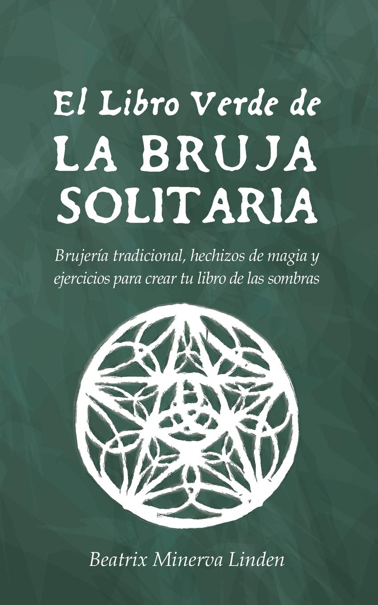
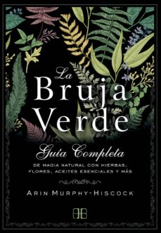

El libro verde de la bruja solitaria
Este es un libro para aprender brujería tradicional por tu cuenta. Es ideal para la bruja moderna, ya que incluye ejercicios prácticos que podrás llevar a cabo en tan solo 10 minutos al día. Si siempre has querido escribir tu propio Libro de las Sombras pero no sabes por dónde empezar, al terminar este libro tendrás tu diario de bruja y sabrás cómo usarlo para hacer hechizos, sortilegios y conjuros. Si te interesa la brujería tradicional, la brujería celta, la brujería verde, o simplemente aprender a hacer hechizos de magia en general, este libro puede serte de gran ayuda.El Libro Verde de la Bruja Solitaria es un manual breve pero muy completo tanto para principiantes como para brujas y brujos de nivel intermedio que desean practicar la magia en solitario, especialmente para aquellos interesados en la magia blanca (aunque incluye también datos útiles para aquellos interesados en otras ramas como la magia gris o la magia negra). En sus páginas descubrirás muchos secretos de la brujería tradicional, que te ayudarán a encontrar tu camino mágico y llevar a cabo hechizos por tu cuenta.El libro está diseñado de manera muy práctica, de modo que puedas leerlo como un manual o usarlo como un curso de seis semanas (tomándote tan sólo unos minutos cada día) con el que aprenderás a hacer magia, hechizos, conjuros y muchas más cosas útiles. Cada día podrás hacer una breve actividad que llevará tus conocimientos de la magia al siguiente nivel. El Libro Verde de la Bruja Solitaria contiene también textos informativos e ilustraciones que te ayudarán a entender los conceptos explicados.Para llevar a cabo los ejercicios de brujería tan solo necesitarás una libreta o diario y objetos que encontrarás mayormente en la naturaleza o en tu casa. Algunos de los temas sobre los que podrás leer y aprender gracias a El Libro Verde de la Bruja Solitaria son: -Las diferencias entre brujería celta, brujería tradicional, Wicca, etc.-Los utensilios que necesitas para practicar la brujería por tu cuenta, y como fabricarlos o conseguirlos de una manera económica y respetuosa con el medio ambiente.-Cómo trabajar la magia con velas, hechizos con cristales, hierbas curativas y otros ingredientes de hechizos mágicos. -Cómo utilizar diferentes métodos de adivinación: cómo echar las cartas del Tarot, cómo interpretar las runas vikingas, cómo usar un péndulo, etc.-Cómo hacer (de manera ética) hechizos de amor, trabajo, etc.-Cómo hacer magia con las fases de la Luna.-Cómo meditar, hacer limpiezas energéticas y crear escudos.-Cómo crear un altar de brujería, crear un círculo mágico y usar tablas de correspondencias en tus hechizos.-Cómo usar la Astrología y la Numerología
Enlace al libro verde
La bruja verde
LA MAGIA NATURAL PARA CONECTAR CON LA ENERGÍA DE LA NATURALEZA Y LA FUERZA FEMENINA.
La bruja verde es una herborista sabia que abraza el poder de la naturaleza y emplea plantas, flores, aceites y hierbas para sanar. Siempre acude al mundo natural en busca de orientación, y respeta a todas y cada una de las criaturas vivientes, por pequeñas que sean.
La bruja verde te guía en este camino mágico y te enseña a elaborar pociones y aceites curativos, además de revelarte que los cristales, las gemas, las piedras y hasta las ramitas pueden ayudarte a encontrar el equilibrio interior. En sus páginas aprenderás a conectar tu alma con todos los seres vivos y el universo, así como a elaborar mezclas y pócimas herbales, practicar rituales, elaborar recetas de platos sagrados y conectar tu vida moderna con la sabiduría ancestral de la tierra.
SUMÉRGETE EN EL MUNDO DE LA BRUJA VERDE Y DESCUBRE LO QUE EL PODER DE LA NATURALEZA TE TIENE RESERVADO.
Enlace al libro de la bruja verde